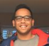

## About


	
<div align="justify">
<big>
I am a first year PhD student in the Electrical and Systems Engineering Department at the University of Pennsylvania. I am advised by Professors Vijay Kumar and Alejandro Ribeiro at the GRASP Lab. My research interests lie at the intersection of learning and decision making for robotics. These include improving upon existing policy optimization methodologies, neural network architectures and exploring new models for robust learning. I am currently spending the summer of 2018 at NVIDIA, Redmond. 
<br>
<br>
Before my PhD, I was pursuing a masters in Robotics also at the University of Pennsylvania where I was advised by Professors Daniel D. Lee and Vijay Kumar. During my masters, my research was focused on learning meaningful representations for robot navigation. I also spent some time working at the LAIR Lab at Carnegie Mellon University's Robotics Institute. At CMU, my research was focused on autonomous UAV flight through GPS denied cluttered outdoor environments such as forests. Before CMU, I completed my Bachelors in Electronics and Communications Engineering at Manipal Institute of Technology, India. 
<br>
<br>
<br>
<br>
<ul class="list-inline banner-social-buttons text-center">
<li>
		<a href="resume.pdf#zoom=100" target="_blank" class="btn btn-default btn-lg"><i class="fa fa-file-pdf-o fa-fw"></i> <span class="network-name">Curriculum Vitae</span></a><!--<a href="cv.pdf#zoom=100" target="_blank" class="btn btn-default btn-lg"><i class="fa fa-file-pdf-o fa-fw"></i> <span class="network-name">Curriculum Vitae</span></a>-->
</li>
</ul>


</big>
</div>


